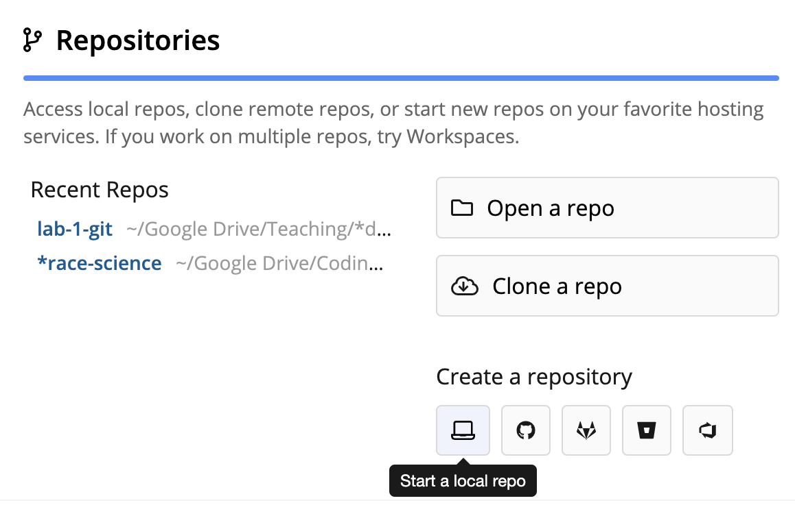

Git for version control
Some motivating examples
While working on your analysis code, you accidentally erase the first 35 lines of the script. You only discover this three days later, when you restart R and try to run the script from the top.
The code you wrote last week is suddenly giving you different results. A bunch of variables are missing, and the standard errors are huge. When you’re talking with your collaborator, he says that he was cleaning the data a few days ago and everything seemed fine. When you go to check, you discover that he’s replaced your 827 survey responses with 6 group summaries.

You’re working on a paper with two coauthors. You prepare the final draft to send for submission: paper final.docx. But one of your coauthors discovers a typo. Now it’s paper final fixed typo.docx. Another realizes six references are missing. paper final fixed typo refs.docx. That’s getting confusing so you change it to paper 2 Aug 2021.docx. Once it comes back from review you need to make revisions. Now you have paper 30 Jan 2022.docx and, after your collaborators make their changes, paper 12 February 2022 DJH.docx and paper 12 February 20222 final.docx.
Version control
- Basic idea: Tools for tracking and reversing changes to code over time
- Useful for identifying and reversing breaking changes
- Implementations upload to cloud, track who contributes code, control who can suggest vs. actually change code
- Good for collaboration, publishing code
Git
- One of many version control systems
- Very popular in part thanks to GitHub, which provides free hosting git repositories
- Resources for students (and teachers): https://education.github.com/
Gitting started
- git is very hard
- We’re going to use the Sourcetree GUI to ease into things
Initial commit

- Install Sourcetree and go through the configuration steps
- Then you’ll see the (empty) repository browser
- Create a folder called something like
learning-git - Then, in Sourcetree:
- On the Local tab
- Select New … > Create a local repository (or) Drag and drop the folder on to the browser
- You can open the repository in Sourcetree, but it’s not interesting yet
- In
learning-git, create a text file, eg,testing.txt - Sourcetree’s File Status panel shows the new file, ready to be tracked
Tracking changes
- Tracking changes to a file involves two steps: Adding and committing
- Add: Click the checkmark
- This tells git that we want to store these changes to the file in its archive
- Commit: Type a message in the comment field and click Commit
- This tells git to go ahead and do the archiving process

- The commit is now displayed in the History panel

Make a few more changes to the file. Practice adding and committing them and note how the changes accumulate in the History panel.
Time travel
- We can checkout previous commits to work with old versions of our files
- In the example, suppose I made a commit with a mistake (my code stopped working or whatever)
- In the History panel, right-click on a previous commit and select Checkout…

- Sourcetree warns us that we’ll be in an undetached head state
- To see what this means, try making a change to the file, adding and committing it, then checking out the commit with the
mainormastertag

The garden of forking branches
- To actually change the past, we’ll use a branch
- Branches allow git to track multiple distinct “timelines” for files
- For example, most major software projects will have separate “dev” (development) and “release” branches
- Individual branches will also be created for work on specific areas of the project
- This allows each area of active work to be isolated from work happening in other areas
- After checking out the previous commit, click on Branch in the toolbar
- Name your new branch something like
fixing-mistake(no spaces!)
- Name your new branch something like
- Start to work on fixing the mistake in the file, then add and commit as usual
- Now checkout
main. Notice:- Your commits on
fixing-mistakedon’t disappear - The state of your file changes to the
mainversion - The History panel shows the split between the two branches
- Your commits on
- After we’ve finished fixing the mistake, we want to merge these changes back into
main- Make sure you’re current on
main - Right-click on
fixing-mistakeand select Merge…
- Make sure you’re current on

- Sourcetree will bring up a message about Merge Conflicts
- This just means that the files you’re combining have conflicting histories, and git wants you to sort out what to keep and what to throw away
Important: It’s not obvious (there isn’t a big red status symbol anywhere), but git is now in a special conflict-resolution state. Until you resolve the conflicts and finish the merge, a lot of standard git functionality either won’t work at all or will cause weird problems. If git starts giving you a bunch of weird errors, check to see if you’re in the middle of a merge and need to resolve conflicts.
- After starting the merge, Sourcetree’s File status panel will indicate exactly which files have conflicts.

- Your file will look something like this
test
another line
<<<<<<< HEAD
this line has a mistake
=======
no mistake this time
>>>>>>> fixing-mistake- The
<<<<<<<and>>>>>>>surround each area of conflict.- The top part (marked
HEAD) shows the state of the current branch - The bottom part (marked
fixing-mistake) shows the state of the branch you’re merging
- The top part (marked
- Simply edit these sections so they’re in the state you want,
- Then save, go back to Sourcetree’s File status panel
- Sourcetree generates a commit message indicating that you’re resolving conflicts to complete a merge
- Afterwards the History panel shows the two branches merging back together

Authenticating Sourcetree with GitHub
- Make sure you’re logged in to GitHub in your default web browser
- In Sourcetree
- Go to a New Tab
- Then Remote (just underneath the tabs)
- Add an account …
Hosting Service: GitHub
Authentication: OAuth
Username: [shouldn’t be able to enter anything]- Click “Refresh OAuth Token”
- Focus should switch to a new tab in your web browser
- Scroll down and click “Authorize atlassian” green button
- Browser should now say “Authentication Successful” and GitHub should send you a security notice via email
- Back in Sourcetree, click okay
Working with GitHub remotes
- A remote is a copy of a repository that lives on a server somewhere else
Working with your own repos
On GitHub, click “New” and walk through the steps to create a new repository
- The name on GitHub doesn’t need to match the local name
- But why wouldn’t you use the same name?
Copy the URL:
https://github.com/[username]/learning-gitBack in Sourcetree
- Go to Settings in the toolbar
- Go to the Remotes tab
- Click Add to add a new remote
The standard name for a default remote is
origin- Paste in the GitHub URL

- After adding the remote, we can send the repository (including its full history) up to GitHub using push
- Look for Push in the toolbar
- Sourcetree will ask which branches to push
- When the push is complete, refresh GitHub in your browser
- You can edit files directly in GitHub
- Now we’ll fetch and pull the changes from GitHub back to our local copy
- Fetch: Compare the local tree to the remote tree, noting any differences. Use this to preview the changes on the remote
- In Sourcetree, hit Fetch in the toolbar. Note that the GitHub commit shows up in the History panel.
- Pull: Actually download the remote changes and incorporate them into your local tree.
Lab: Working with someone else’s repos
- GitHub lets you download someone else’s repo (clone), and modify it locally, but not upload directly.
- You can suggest a change to someone else’s code by submitting a pull request, which first requires forking the repository.

- Start with the repo for this week’s lab: https://github.com/data-science-methods/lab-w02-git
- Fork: Look for the
forkbutton in the upper-right

- Clone: After creating the fork, you need to download a copy to your machine.
- In Sourcetree’s repository browser, select New… > Clone from URL
- This lesson continues in the lab. Open
lab.htmlandlab.Rto continue.